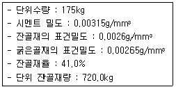
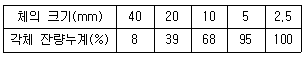
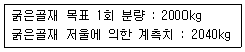
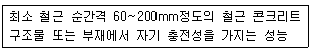
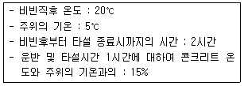
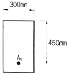

콘크리트산업기사 (2016-05-08 기출문제)
1과목: 콘크리트재료 및 배합
1. 콘크리트용 잔골재의 밀도 및 흡수율 시험은 2회 시험의 평균값을 잔골재의 밀도 및 흡수율 값으로 하고 있다. 이때 시험의 정밀도에 대한 설명으로 옳은 것은?
- 시험값은 평균과의 차이가 밀도의 경우 0.02g/cm3이하, 흡수율의 경우는 0.01% 이하여야 한다.
- 시험값은 평균과의 차이가 밀도의 경우 0.02g/cm3이하, 흡수율의 경우는 0.⑤% 이하여야 한다.
- 시험값은 평균과의 차이가 밀도의 경우 0.01g/cm3이하, 흡수율의 경우는 0.01% 이하여야 한다.
- 시험값은 평균과의 차이가 밀도의 경우 0.01g/cm3이하, 흡수율의 경우는 0.⑤% 이하여야 한다.
(정답률: 60%)

2. 혼화제의 종류 및 특성에 대한 설명 중 잘못된 것은?
- AE제 : 콘크리트의 작업성을 개선하고 동결융해 저항성을 향상시킨다.
- 유동화제 : 콘크리트의 현장타설전, 콘크리트의 일시적인 슬럼프 증대 효과를 갖는다.
- 증점제 : 소성(Plastictiy)이 증가하고 재료분리 저감효과를 갖는다.
- 지연제 : 콘크리트의 콜드조인트를 방지하기 위한 것으로 한중 콘크리트에 사용된다.
(정답률: 83%)
3. 아래 표와 같은 조건에서 단위 굵은골재량은 얼마인가?

- 956kg
- 1004kg
- 1⑤6kg
- 1198kg
(정답률: 45%)
4. 콘크리트용 혼화제인 감수제의 종류 중 응결, 초기경화의 속도에 따라 분류되는 형태가 아닌 것은?
- 촉진형
- 조강형
- 지연형
- 표준형
(정답률: 68%)
5. 17회의 압축시험 실적으로부터 구한 압축강도의 표준편차가 5MPa 인 경우 배합강도를 구할 때 적용해야 할 압축강도의 표준편차(s)로서 옳은 것은? (단, 보정계수를 고려하여야 하며, 시험횟수가 15회, 20회인 경우의 표준편차의 보정계수는 각각 1.16, 1.08 이다.)
- 5.4MPa
- 5.64MPa
- 5.72MPa
- 5.8MPa
(정답률: 59%)
6. 혼화재로 실리카 퓸을 사용한 콘크리트의 특성에 대한 설명으로 틀린 것은?
- 단위수량 및 건조수축이 감소된다.
- 투수성이 작아 수밀성이 향상되며, 재료분리 저항성이 향상된다.
- 수화열이 작고, 화학저항성이 향상된다.
- 마이크로 필러 효과로 압축강도 발현성이 크다.
(정답률: 58%)
7. 콘크리트용 고로슬래그 미분말의 품질에 관한 특성 중 알맞지 않은 것은?
- 장기강도를 증진시킨다.
- 수화열의 발생속도를 늦춘다.
- 수밀성은 다소 저하되는 경향이 있다.
- 알칼리골재 반응을 억제시킨다.
(정답률: 52%)
8. 혼화재의 저장방법으로 틀린 것은?
- 방습적인 사일로 또는 창고 등에 품종별로 구분하여 보관한다.
- 장기 저장이 가능하므로 입하하는 순서와 상관없이 사용한다.
- 장기간 저장한 혼화재는 사용 전에 시험을 실시하여 품질을 확인해야 한다.
- 혼화재는 취급 시에 비산하지 않도록 주의한다.
(정답률: 96%)
9. 다음의 시험방법 중 시멘트 시험과 관계 없는 것은?
- 비중
- 안정도
- 블리딩
- 압축강도
(정답률: 42%)
10. 시멘트 비중시험에 관한 다음 설명 중 옳지 않은 것은?
- 포틀랜드 시멘트의 경우는 약 64g을 사용한다.
- 르샤틀리에 플라스크를 사용한다.
- 비중병에 시멘트를 투입하기 전에 물 또는 광유를 투입하여야 한다.
- 시멘트를 넣은 후 기포를 제거해주어야 한다.
(정답률: 78%)
11. 굵은골재의 체가름 시험결과가 아래 표와 같을 때 이 골재의 조립률은?

- 7.10
- 2.10
- 6.71
- 7.04
(정답률: 54%)
12. 흡수율이 2.48%인 젖은 모래 568.3g을 110℃에서 24시간 건조 하여 525.6g으로 일정질량이 되었다. 이 젖은 모래의 표면수율은?
- 4.2%
- 5.5%
- 6.7%
- 8.1%
(정답률: 60%)
13. 콘크리트용 골재에 관한 설명으로 틀린 것은?
- 골재 중의 0.15mm~0.6mm의 골재가 많으면 공기연행성을 감소시킨다.
- 골재 중에 석탄, 갈탄의 양이 많으면 콘크리트의 강도가 낮아지며 외관을 해친다.
- 콘크리트표준시방서에서는 잔골재에 함유된 염화물(NaCl 환산량)량을 질량백분율로 0.04%이하로 규정하고 있다.
- 내화적이면서 강도, 내구성 등을 필요로 하는 콘크리트에서 고로슬래그 굵은골재나 내구적인 안산암, 현무암 등을 사용하는 것이 좋다.
(정답률: 32%)
14. 콘크리트 배합에서 단위 시멘트량을 증가시킬 경우에 대한 설명으로 옳은 것은?
- 점성이 감소된다.
- 재료분리가 감소된다.
- 내구성, 수밀성이 감소된다.
- 워커빌리티가 나빠진다.
(정답률: 63%)
15. 각종 골재에 대한 설명으로 틀린 것은?
- 콘크리트용 부순 골재는 일반 콘크리트용 골재와는 달리 입자 모양 판정 실적률을 검토하여야 한다.
- 고로슬래그 잔골재는 고온 하에서 장기간 저장해 두면 굳어질 우려가 있기 때문에 동결방지제를 살포함과 동시에 가능한 한 1개월 이내에 사용하는 것이 좋다.
- 부순 잔골재의 경우 다량의 미분말을 함유하는 경우가 많아 콘크리트의 성능에 영향을 미치기 때문에 미립분 함유량을 검토할 필요가 있다.
- 인공경량골재를 사용한 콘크리트의 경우 하천골재를 사용한 경우보다 압축강도는 떨어지지만 동결융해 저항성은 향상된다.
(정답률: 73%)
16. 콘크리트의 배합설계에 관한 내용으로 틀린 것은?
- 배합강도는 설계기준강도보다 커야한다.
- 슬럼프는 작업이 가능한 범위 내에서 최소가 되도록 하는 것이 원칙이다.
- 배합설계의 기준이 되는 강도는 압축강도이며, 휨강도나 인장강도가 기준이 되는 경우는 없다.
- 콘크리트의 배합은 소요의 품질 및 작업에 적합한 워커빌리티를 갖는 범위 내에서 가능한 단위수량이 적게 되도록 정한다.
(정답률: 62%)
17. 시멘트의 강도시험(KS L ISO 679)에서 3개의 시험체를 한 조합된 시료로 할 경우 필요한 시멘트, 표준사, 물의 양으로 옳은 것은?
- 시멘트 450g, 표준사 1350g, 물 225g
- 시멘트 450g, 표준사 1215g, 물 180g
- 시멘트 450g, 표준사 1080g, 물 225g
- 시멘트 450g, 표준사 1350g, 물 180g
(정답률: 75%)
18. 콘크리트의 압축강도를 알지 못할 때, 또는 압축강도의 시험횟수가 14회 이하인 경우 콘크리트의 배합강도를 구한 것으로 틀린 것은?
- 설계기준강도 fck=20MPa 일 때, 배합강도 fcr=27MPa
- 설계기준강도 fck=25MPa 일 때, 배합강도 fcr=33MPa
- 설계기준강도 fck=30MPa 일 때, 배합강도 fcr=38.5MPa
- 설계기준강도 fck=50MPa 일 때, 배합강도 fcr=60sMPa
(정답률: 67%)
19. 동해에 의한 골재의 붕괴작용에 대한 저항성을 측정하기 위한 시험방법은?
- 안정성시험
- 유기불순물시험
- 오토클레이브시험
- 마모시험
(정답률: 67%)
20. 굵은골재의 체가름 시험에서 사용하는 굵은골재의 최대치수가 40mm정도인 경우 시료의 최소 건조질량으로 옳은 것은? (단, 보통 중량의 골재를 사용하는 경우)
- 2kg
- 4kg
- 6kg
- 8kg
(정답률: 48%)
2과목: 콘크리트제조, 시험 및 품질관리
21. 공시체 규격이 150mm×150mm×530mm로 지간길이가 450mm인 단순보의 3등분점 재하법의 휨강도 시험을 한 결과 최대 하중이 24500N일 때 공시체가 인장쪽 표면 지간방향 중심선의 3등분점 사이에서 파괴가 되었다. 이 공시체의 휨강도는?
- 2.9MPa
- 3.3MPa
- 4.9MPa
- 5.3MPa
(정답률: 69%)
22. 콘크리트의 탄성계수가 2.5×104MPa이고 포아송비가 0.2일 때 전 단탄성계수는?
- 1.04×104MPa
- 5.⑤×104MPa
- 7.27×104MPa
- 12.43×104MPa
(정답률: 50%)
23. 압축강도에 의한 일반 콘크리트의 품질검사에 관한 설명 중 옳지 않은 것은? (단, 콘크리트표준시방서의 규정에 의한다.)
- 설계기준압축강도로부터 배합을 정한 경우 각각의 압축강도 시험값이 설계기준압축강도보다 5.0MPa에 미달하는 확률이 1%이하이어야 한다.
- 설계기준압축강도로부터 배합을 정한 경우 연속 3회 시험값의 평균이 설계기준압축강도 이상이어야 한다.
- 품질 검사는 설계기준압축강도로부터 배합을 정한 경우와 그 밖의 경우로 구분하여 시행한다.
- 압축강도에 의한 콘크리트 품질관리는 일반적인 경우 조기 재령에 있어서의 압축강도에 의해 실시한다.
(정답률: 45%)
24. 굳지 않은 콘크리트의 소성수축균열에 대한 설명으로 틀린 것은?
- 콘크리트 마무리면에 가늘고 얇은 균열 형태로 나타난다.
- 콘크리트 블리딩 속도가 표면수의 증발속도보다 빠른 경우에 일어난다.
- 균열을 방지하기 위해서는 표면에 급격한 온도변화가 일어나지 않도록 하여야 한다.
- 균열을 방지하기 위해서는 수분의 증발을 방지하고 마무리를 지나치게 하지 않아야 한다.
(정답률: 75%)
25. 콘크리트 구조물의 검사 중 표면 상태의 검사항목에 해당되지 않는 것은?
- 시공이음
- 균열
- 양생방법
- 노출면의 상태
(정답률: 80%)
26. 콘크리트의 건조수축에 영향을 미치는 요인에 대한 설명으로 틀린 것은?
- 시멘트의 분말도가 클수록 습윤상태에서 팽창이 커진다.
- 물-시멘트비가 클수록 건조수축은 작아진다.
- 골재의 함량이 많을수록 건조수축은 작아진다.
- 온도가 높은 경우 건조수축은 증가한다.
(정답률: 73%)
27. 레디믹스트 콘크리트의 공기량은 보통콘크리트의 경우 ( A )%이며, 그 허용오차는 ± ( B )%로 한다. 여기서 빈 칸에 알맞은 것은?
- A : 2.5, B: 1.0
- A : 3.0, B: 1.5
- A : 4.0, B: 1.0
- A : 4.5, B: 1.5
(정답률: 65%)
28. 콘크리트 압축강도 시험에 관한설명으로 옳지 않은 것은?
- 공시체의 지름은 0.1mm, 높이는 1mm까지 측정한다.
- 일반적으로 사용하는 공시체는 원통형 공시체로 직경에 대한 길이의 비가 1:3인 것을 많이 사용한다.
- 공시체의 제작에서 몰드를 떼는 시기는 채우기가 끝나고 나서 16시간 이상 3일 이내로 한다.
- 콘크리트의 압축강도의 표준은 특별한 경우를 제외하고는 일반적으로 재령 28일을 설계의 표준으로 한다.
(정답률: 43%)
29. 콘크리트의 워커빌리티 및 반죽질기에 대한 설명으로 틀린 것은?
- 단위 시멘트량이 많아질수록 성형성이 좋아지고 워커블해진다.
- 단위 수량이 많을수록 반죽질기가 질게 되어 유동성이 증가하지만 재료분리가 발생하기 쉬워진다.
- 잔골재율을 증가시키면 동일 워커빌리티를 얻기 위한 단위수량을 줄여야 한다.
- 일반적으로 콘크리트의 비빔온도가 높을수록 반죽질기는 저하하는 경향이 있다.
(정답률: 46%)
30. 콘크리트의 비비기에 대한 설명으로 옳은 것은?
- 강제식 믹서의 최소 비비기 시간은 30초 이상으로 하여야 한다.
- 비비기는 미리 정해 둔 비비기 시간의 3배 이상 계속하여야 한다.
- 비비기를 시작하기 전에 미리 믹서 내부를 모르타르로 부착하여야 한다.
- 가경식 믹서의 최소 비비기 시간은 1분 이상으로 하여야 한다.
(정답률: 66%)
31. 일정량의 AE제를 사용한 경우에 연행되는 공기량에 대한 내용 중 옳지 않은 것은?
- 물-시멘트비가 클수록 공기량이 많게 된다.
- 슬럼프가 클수록 공기량이 많게 된다.
- 단위 잔골재량이 많을수록 공기량이 많게 된다.
- 콘크리트의 온도가 높을수록 공기량이 많게 된다.
(정답률: 62%)
32. 콘크리트의 굵은골재 계량값이 아래 표와 같을 때 계량오차와 허용치 만족여부를 순서대로 옳게 나열한 것은?

- 계량오차 : 1%, 허용치 만족여부 : 합격
- 계량오차 : 2%, 허용치 만족여부 : 합격
- 계량오차 : 1%, 허용치 만족여부 : 불합격
- 계량오차 : 2%, 허용치 만족여부 : 불합격
(정답률: 60%)
33. 콘크리트 재료의 계량에 대한 일반적인 설명으로 틀린 것은?
- 계량은 현장 배합에 의해 실시하는 것으로 한다.
- 혼화제를 녹이는 데 사용하는 물이나 혼화제를 묽게 하는 데 사용하는 물은 단위수량의 일부로 보아야 한다.
- 각 재료는 1배치씩 질량으로 계량하여야 하나, 물과 혼화제 용액은 용적으로 계량해도 좋다.
- 연속믹서를 사용할 경우, 각 재료는 질량으로만 계량하여야 한다.
(정답률: 48%)
34. 콘크리트의 슬럼프 시험에서 몰드에 콘크리트를 3층으로 채우고 각각 다진 후 슬럼프콘을 들어 올리는데, 이때 들어 올리는 시간의 표준은?
- 2~3초
- 4~5초
- 6~7초
- 8~9초
(정답률: 68%)
35. 다음 관리도 중 적용이론이 정규분포 이론이 아닌 것은?
 관리도
관리도 관리도
관리도- x 관리도
- u 관리도
(정답률: 71%)
36. 시방배합을 현장배합으로 수정할 때 고려해야 하는 보정은?
- 입도보정 및 표면수보정
- 잔골재율보정 및 입도보정
- 물-결합재비보정 및 표면수보정
- 잔골재율보정 및 물-결합재비보정
(정답률: 44%)
37. 콘크리트의 탄산화 깊이를 측정할 때 사용되는 시약은?
- 페놀프탈레인 용액
- 무수황산나트륨 용액
- 염화바륨
- 수산화나트륨
(정답률: 76%)
38. 품질관리의 순서로 적당한 것은?
- 계획-조치-검토-실시
- 계획-검토-조치-실시
- 계획-실시-검토-조치
- 계획-검토-실시-조치
(정답률: 74%)
39. ø150mm×300mm인 콘크리트 표준공시체에 대한 압축강도 시험결과, 300kN의 하중에서 파괴되었다. 이 공시체의 압축강도는?
- 6.7MPa
- 13.3MPa
- 17.0MPa
- 34.0MPa
(정답률: 72%)
40. 콘크리트의 수밀성을 향상시키기 위한 방법으로 적합하지 않는 것은?
- 배합시 콘크리트의 물-결합재비를 저감시킴
- 혼화재로 플라이 애시를 사용
- 습윤양생기간을 충분히 함
- 경량골재를 사용
(정답률: 60%)
3과목: 콘크리트의 시공
41. 한중콘크리트 시공 시 사용 시멘트로서 가장 적합한 것은?
- 플라이애시 시멘트
- 포틀랜드 시멘트
- 실리카 시멘트
- 고로 시멘트
(정답률: 64%)
42. 콘크리트의 운반에 관한 설명으로 틀린 것은?
- 공사 시작 전에 콘크리트의 운반에 관해 미리 충분한 계획을 세워 놓아야 한다.
- 콘크리트는 신속하게 운반하여 즉시 타설하고, 충분히 다져야 한다.
- 비비기로부터 타설 완료시까지의 시간은 원칙적으로 외기 온도가 25℃이상일 때는 1.5시간을 넘어서는 안 된다.
- 외기온도가 25℃미만일 때 비비기로부터 타설 완료시까지의 시간은 원칙적으로 3시간 이내이다.
(정답률: 77%)
43. 콘크리트 시공이음에 대한 설명으로 틀린 것은?
- 시공이음은 될 수 있는 대로 전단력이 적은 위치에 설치하는 것이 원칙이다.
- 부재의 압축력이 작용하는 방향과 평행하도록 설치하여야 한다.
- 외부의 염분에 의한 피해를 받을 우려가 있는 해양 및 항만 콘크리트 구조물 등에 있어서는 시공 이음부를 되도록 두지 않는 것이 좋다.
- 수밀을 요하는 콘크리트에 있어서는 소요의 수밀성이 얻어지도록 적절한 간격으로 시공 이음부를 두어야 한다.
(정답률: 82%)
44. 방사선 차폐용 콘크리트에 대한 일반적인 설명으로 틀린 것은?
- 콘크리트의 슬럼프는 작업에 알맞은 범위 내에서 가능한 적은 값이어야 하며, 일반적인 경우 40mm 이하로 하여야 한다.
- 물-결합재비는 50%이하를 원칙으로 한다.
- 주로 생물체의 방호를 위하여 X선, γ선 및 중성자선을 차폐할 목적으로 사용된다.
- 차폐용 콘크리트로서 필요한 성능인 밀도, 압축강도, 설계허용 온도, 결합수량, 붕소량 등을 확보하여야 한다.
(정답률: 54%)
45. 포장용 콘크리트의 배합기준 중 강도기준으로 옳은 것은?
- 설계기준 휨강도(f28)가 4.5MPa이상
- 설계기준 휨강도(f28)가 3.5MPa이상
- 설계기준 압축강도(f28)가 20MPa이상
- 설계기준 압축강도(f28)가 30MPa이상
(정답률: 64%)
46. 일평균 기온이 25℃를 초과하여 콘크리트를 배합하는 경우 일반적으로 기온 10℃상승에 대해 소요의 단위수량은 어느 정도 증가하는가?
- 2~5%
- 6~10%
- 12~15%
- 16~20%
(정답률: 50%)
47. 다음은 고강도 콘크리트의 재료 및 제조에 대한 설명이다. 옳지 않은 것은?
- 강제식 믹서보다는 가경식 믹서의 사용이 효과적이다.
- 단위수량은 최대 180kg/m3이하로 한다.
- 잔골재율은 소요의 워커빌리티를 얻도록 시험에 의하여 결정하여야 하며, 가능한 적게 하여야 한다.
- 굵은골재 최대치수는 가능한 25mm 이하를 사용하도록 한다.
(정답률: 65%)
48. 섬유보강 콘크리트의 품질검사 항목 및 판정기준을 설명한 것으로 틀린 것은?
- 휨인성 계수 : 설계시 고려된 휨인성 계수값에 미달할 확률이 5%이하일 것
- 굳지 않은 강섬유보강 콘크리트의 강섬유혼입률 : 허용차 ±1.0%
- 압축인성 : 설계시 고려된 압축인성 값에 미달할 확률이 5%이하일 것
- 휨강도 : 설계시 고려된 휨강도 계수값에 미달할 확률이 5%이하일 것
(정답률: 59%)
49. 콘크리트 공장제품에 대한 설명으로 틀린 것은?
- 충분한 품질관리로 신뢰성 높은 제품의 제조가 가능하다.
- 공사기간의 단축이 가능하다.
- 공장제품의 특성상 대량생산이 어려우며, 범용성이 떨어진다.
- 기후에 좌우되지 않고 제조가 가능하다.
(정답률: 83%)
50. 트레미로 시공하는 일반 수중 콘크리트의 슬럼프의 표준값으로 옳은 것은?
- 40~80mm
- 80~130mm
- 130~180mm
- 180~210mm
(정답률: 54%)
51. 전단력이 큰 위치에 시공이음을 설치할 경우 전단력에 대한 보강 방법으로 적절하지 않은 것은?
- 장부(요철)를 만드는 방법
- 홈을 만드는 방법
- 철근으로 보강하는 방법
- 레이턴스를 많이 발생시키는 방법
(정답률: 70%)
52. 아래의 표에서 설명하는 고유동 콘크리트의 자기 충전성 등급은?

- 1등급
- 2등급
- 3등급
- 4등급
(정답률: 68%)
53. 유동화 콘크리트의 슬럼프 증가량에 대한 설명으로 옳은 것은?
- 슬럼프 증가량은 50mm 이하를 원칙으로 하며, 20~40mm를 표준으로 한다.
- 슬럼프 증가량은 100mm 이하를 원칙으로 하며, 20~40mm를 표준으로 한다.
- 슬럼프 증가량은 100mm 이하를 원칙으로 하며 50~80mm를 표준으로 한다.
- 슬럼프 증가량은 150mm 이하를 원칙으로 하며, 80~100mm를 표준으로 한다.
(정답률: 75%)
54. 고강도 콘크리트의 시공에 대한 설명으로 옳지 않은 것은?
- 운반차량에는 고성능 감수제 투여장치와 같은 보조장치를 준비하여야 한다.
- 낮은 물-결합재비를 가지므로 기건 양생을 실시해야 한다.
- 다짐에 사용되는 다짐기의 기종은 높은 점섬 등을 고려하여 선정하여야 한다.
- 콘크리트 타설의 낙하고는 1m 이하로 하는 것이 좋다.
(정답률: 71%)
55. 수중불분리성 콘크리트를 타설할 때 적정한 수중 낙하 높이는?
- 0.5m 이하
- 0.8m 이하
- 1.0m 이하
- 1.5m 이하
(정답률: 59%)
56. 아래 표와 같은 조건에서 한중콘크리트의 타설이 종료되었을 때 온도를 구하면?

- 10.5℃
- 12.5℃
- 15.5℃
- 17.75℃
(정답률: 62%)
57. 미리 거푸집 속에 특정한 입도를 가지는 굵은골재를 먼저 투입한 후 골재와 골재사이 빈틈에 시멘트모르타르를 주입하여 제작하는 방식의 콘크리트는?
- 진공콘크리트
- P.S 콘크리트
- 수밀콘크리트
- 프리플레이스트콘크리트
(정답률: 78%)
58. 콘크리트 타설 중 내부진동기의 사용방법에 대한 설명 중 틀린 것은?
- 내부진동기 다짐작업 시 하층의 콘크리트 속으로 0.5m 정도 찔러 넣어야 한다.
- 내부진동기 삽입가격은 0.5m 이하로 한다.
- 1개소 당 진동시간은 다짐할 때 시멘트 페이스트카 표면 상부로 약간 부상하기 까지 한다.
- 내부진동기는 콘크리트를 횡방향으로 이동시킬 목적으로 사용해서는 안 된다.
(정답률: 63%)
59. 숏크리트의 시공에 대한 설명으로 옳은 것은?
- 습식 숏크리트는 배치후 90분 이내에 뿜어붙이기를 완료하여야 한다.
- 습식 숏크리트는 배치후 30분 이내에 뿜어붙이기를 실시하여야 한다.
- 건식 숏크리트는 배치후 1시간 이내에 뿜어붙이기를 완료하여야 한다.
- 건식 숏크리트는 배치후 45분 이내에 뿜어붙이기를 실시하여야 한다.
(정답률: 60%)
60. 다음 중 촉진 양생의 종류가 아닌 것은?
- 오토클레이브 양생
- 전기양생
- 증기양생
- 습윤양생
(정답률: 53%)
4과목: 콘크리트 구조 및 유지관리
61. 다음 중 콘크리트 타설 후 가장 빨리 발생되는 균열의 종류는?
- 온도균열
- 소성수축균열
- 건조수축균열
- 알카리 골재 반응
(정답률: 84%)
62. 콘크리트의 건조수축으로 인한 균열을 제어하기 위한 대책으로 틀린 것은?
- 강도증진을 위하여 가능하면 배합 수량을 적게 한다.
- 단위 골재량을 증가시킨다.
- 양생단계에서 수분을 적게 공급하여 증발할 여지를 줄인다.
- 가급적 흡수율이 작고 입도가 양호한 골재를 사용한다.
(정답률: 64%)
63. 그림과 같은 단철근 직사각형 단면의 공칭휨강도(Mn)는? (단, As=2540mm2, fck=24MPa, fy=300MPa)

- 295.5kNㆍm
- 272.9kNㆍm
- 251.1kNㆍm
- 228.5kNㆍm
(정답률: 58%)
64. 비파괴시험 방법 중 철근부식 평가를 위한 시험이 아닌 것은?
- 자연전위법
- 전기저항법
- 전자파 레이더법
- 분극저항법
(정답률: 65%)
65. 다음 중 부재에 따른 강도감소계수가 틀린 것은?
- 인장지배 단면 : 0.85
- 압축지배 단면 중 띠철근으로 보강된 철근콘크리트 부재 : 0.70
- 포스트텐션 정착구역 : 0.85
- 무근콘크리트의 휨모멘트 : 0.55
(정답률: 66%)
66. 1방향 슬래브에 대한 설명으로 틀린 것은?
- 4변에 의해 지지되는 2방향 슬래브 중에서 단변에 대한 정변의 비가 2배를 넘으면 1방향 슬래브로 해석한다.
- 슬래브의 정모멘트 철근 및 부모멘트 철근의 중심간격은 위험단면에서는 슬래브 두께의 3배 이하이어야 하고, 또한 450mm이하로 하여야 한다.
- 1방향 슬래브의 두께는 최소 100mm이상으로 하여야 한다.
- 1방향 슬래브에서 정모멘트 철근 및 부모멘트 철근에 직각방향으로 수축ㆍ온도 철근을 배치하여야 한다.
(정답률: 50%)
67. 콘크리트의 탄산화로 인한 철근 부식을 방지하여 균열발생을 억제하려고 할 때 취하여야 할 조치로서 적절하지 못한 것은?
- 재료 중의 염분량 축소
- 충분한 피복두께 확보
- 탄산가스 농도의 저감
- 수밀성의 확보
(정답률: 61%)
68. 다음 중 규정에 의한 최소 전단철근을 배치하여야 하는 구조물은?
- 계수전단력(Vu)이 콘크리트에 의한 설계전단강도(øVc)의 1/2이하인 철근콘크리트보
- 기초판
- 깊이가 플랜지 두께의 3배인 T형보
- 전체 깊이가 200mm인 철근콘크리트보
(정답률: 61%)
69. 다음 중 철근콘크리트 구조물의 장기처짐에 가장 큰 영향을 미치는 요소는?
- 최대철근비
- 균형철근비
- 인장철근비
- 압축철근비
(정답률: 44%)
70. 휨부재에서 fck=24MPa, fy=300MPa 일 때 D25(공창직경 25.4mm)인 인장 철근의 기본정착 길이는?
- 822mm
- 934mm
- 1024mm
- 1143mm
(정답률: 52%)
71. 1방향 슬래브에서 처짐을 계산하지 않는 경우 부재의 길이가 2.5m 일 때 캔틸레버 부재의 슬래브 최소 두께는 얼마인가? (단, 보통콘크리트(mc=2300kg/m3)와 fy=400MPa인 철근을 사용한 부재)
- 89mm
- 104mm
- 125mm
- 250mm
(정답률: 30%)
72. 콘크리트 구조 내부의 공동이나 균열과 같은 결함을 조사하는 방법으로 적당하지 않은 것은?
- 반발경도법
- 초음파법
- 어쿠스틱 에미션(AE)법
- 충격탄성파법
(정답률: 49%)
73. 강도설계법에 의한 전단설계에서, 전단보강철근을 사용하지 않고 계수하중에 의한 전단력 Vu=100kN을 지지하려고 한다. 보의 폭이 1000mm일 경우 보의 유효깊이의 최소값은? (단, fck=25MPa 이다.)
- 120mm
- 160mm
- 240mm
- 320mm
(정답률: 25%)
74. 단철근 직사각형보를 강도설게법으로 설계를 할 때 항복응력 fy=400MPa, d=500mm라면 균형단면의 중립축거리(Cb)는?
- 200mm
- 250mm
- 300mm
- 350mm
(정답률: 62%)
75. 다음 중 구조물의 외관조사 항목이 아닌 것은?
- 철근 배근조사
- 균열조사
- 강재부식 변형조사
- 기초세굴 변형조사
(정답률: 71%)
76. 콘크리트 구조물의 보수에 관한 설명 중 틀린 것은?
- 보수는 시설물의 내구성 등 주로 내력 이외의 기능을 회복시키기 위한 것이다.
- 보수에 있어서의 요구조건은 구조물의 준공상태 이상으로 하여야한다.
- 보수의 수준은 위험도, 경제성, 시공성 등을 고려하여 실시한다.
- 보수공사는 더 이상의 열화를 방지하기 위한 수단이기도 하다.
(정답률: 75%)
77. 수동식 주입법은 주입 건(gun)이나 소형 펌프를 사용하여 주입제를 비교적 다량으로 주입할 경우 사용되는 방법이다. 이 공법의 장점으로 거리가 먼 것은?
- 다량의 수지를 단시간에 주입할 수 있다.
- 균열폭 0.2mm 이하의 미세한 균열부위에 주입하기가 용이하다.
- 주입압이나 속도를 조절할 수 있다.
- 벽, 바닥, 천장 등의 부위에 따른 제약이 없다.
(정답률: 66%)
78. 다음은 크리프의 특성에 대한 설명이다. 옳지 않은 것은?
- 물-시멘트비가 큰 콘크리트는 물-시멘트비가 작은 콘크리트보다 크리프가 크게 일어난다.
- 재하시 콘크리트 구조물의 재령이 클수록 크리프는 적게 일어난다.
- 하중을 제거하면 크리프 변형도 없어지고 콘크리트 구조물은 원상태로 돌아온다.
- 부재치수가 작을수록 크리프는 크게 일어난다.
(정답률: 64%)
79. 구조물의 보수공법 중 주입공법의 특징으로 틀린 것은?
- 내력 복원의 안전성을 기대할 수 있다.
- 내구성 저하방지 및 누수방지를 기대할 수 있다.
- 미관의 유지가 용이하다.
- 소요의 접착강도가 발현되기 위해 장기간이 소요된다.
(정답률: 75%)
80. 다음 중 콘크리트 구조물 보강공법이 아닌 것은?
- 두께증설공법
- 외부케이블공법
- 강판접착공법
- 균열주입공법
(정답률: 40%)